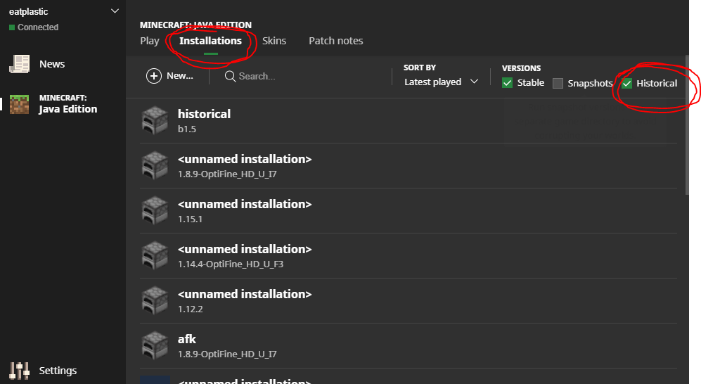
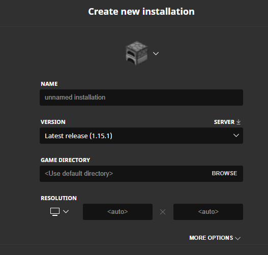
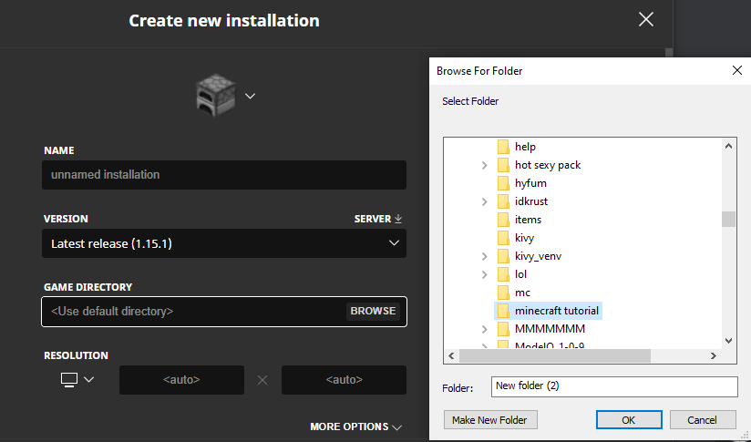
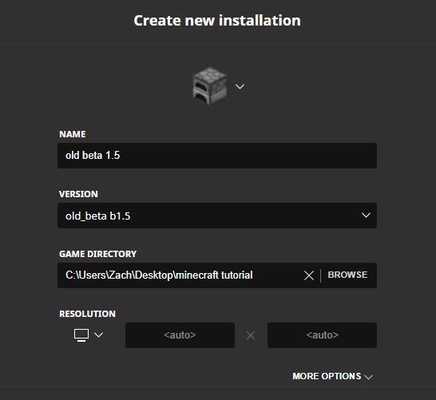

Step 1: Open Minecraft launcher, go to installations, then check the box that says "Historical"
Step 2: Press 2 and select the minecraft version you want to use (alpha/beta versions at bootom of list)
Step 3: Press Game Directory and create a new folder for beta/alpha minecraft. ignore my file names lmao
Step 4: Press save and play
